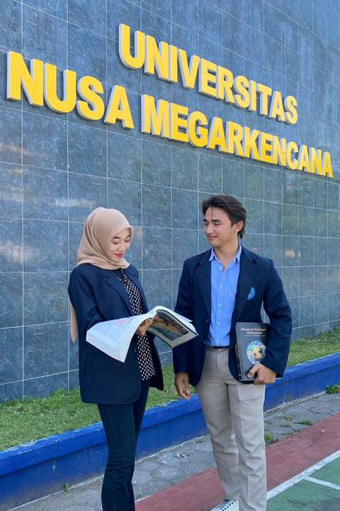
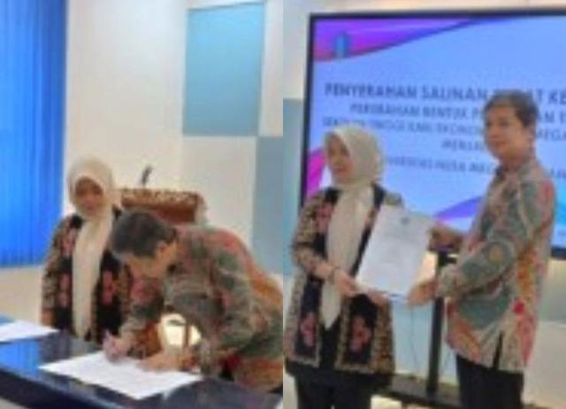

Profil Program Studi
Program Studi Sarjana Teknik Sipil, Fakultas Teknik dan Informatika, Universitas Nusa Megarkencana.
Tentang Teknik Sipil UNMEKA.
Program Studi Teknik Sipil mempersiapkan lulusan yang mampu merencanakan, merancang, dan membangun infrastruktur. Pembelajaran memadukan teori dengan praktik lapangan untuk menghasilkan solusi inovatif bagi pembangunan berkelanjutan.
Universitas Nusa Megarkencana (UNMEKA) adalah perguruan tinggi swasta di Yogyakarta yang bernaung di bawah Yayasan Pendidikan Nusa Megarkencana. Berawal dari STIE Nusa Megarkencana, institusi ini memperoleh izin perubahan bentuk menjadi universitas pada 23 Juli 2024 dan kini memiliki dua fakultas dengan lima program studi sarjana.
Teknik Sipil merupakan salah satu dari tiga program studi di Fakultas Teknik dan Informatika, bersama Sistem Informasi dan Informatika.
Visi dan Misi
Visi
Pada tahun 2028, Program Studi Teknik Sipil Universitas Nusa Megarkencana menjadi Program Studi yang berorientasi global dan berkontribusi dalam pembangunan berkelanjutan melalui tata kelola dan tri dharma perguruan tinggi yang adaptif, transformatif, dan inovatif.
Misi
Pencapaian visi didukung oleh empat misi Program Studi Teknik Sipil, yaitu:
- Menyelenggarakan program pendidikan tinggi yang menghasilkan lulusan yang unggul dan profesional dalam penerapan rekayasa sipil dalam berbagai aspek kehidupan.
- Menyelenggarakan kegiatan penelitian baik di tingkat nasional maupun internasional di bidang rekayasa sipil yang mendorong pengembangan, penyebarluasan keilmuan perencanaan dan perancangan.
- Menyelenggarakan kegiatan pengabdian kepada masyarakat sebagai wujud pengejawantahan tanggung jawab sosial (social responsibility) kepada masyarakat yang mendukung peningkatan kualitas hidup masyarakat, perekonomian nasional, dan pelestarian lingkungan yang seimbang serta berkelanjutan.
- Menyelenggarakan dan mengembangkan jejaring kerja sama dengan berbagai institusi, baik di dalam maupun di luar negeri yang mampu mendukung penguatan identitas nasional, dan jati diri bangsa di lingkungan global melalui eksplorasi dan pengenalan inovatif kearifan lokal di bidang rekayasa sipil.
Sumber: halaman Program Studi Teknik Sipil di unmeka.ac.id.
Perjalanan institusi
Dari sekolah tinggi ekonomi menjadi universitas dengan fakultas teknik.

Sejak1998